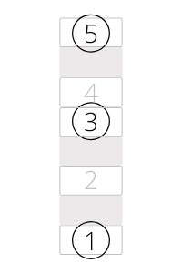

The Major Chord
Knowing the major scale, we can easily construct a major chord. Just play the first, third, and fifth note of a major scale at the same time. In the key of C, you would play C, E, and G. Try it! This probably sounds familiar, just like the major scale sounds familiar. Below is how I like to visualize the major chord, along with how it's written in music notation (in the key of C major).
In the picture above, five notes from the major scale are arranged in a vertical line (using numbers instead of note names so it can be applied in any key), and the notes you play to make the major chord are circled. Notice that the space between numbers three and four is smaller than the space between the other numbers. This is because the distance between the third and fourth note of the major scale is a semitone, not a tone. You can learn all twelve major chords by playing the first, third and fifth notes of all twelve major scales.
Another important way of thinking about the major chord is in terms of intervals, or distances between each of the notes in the chord. For the major chord, the distance from the bottom note to the middle note is four semitones, or a major third. The distance from the bottom note to the top note is seven semitones, or a perfect fifth. (See this page for an explanation of intervals.)